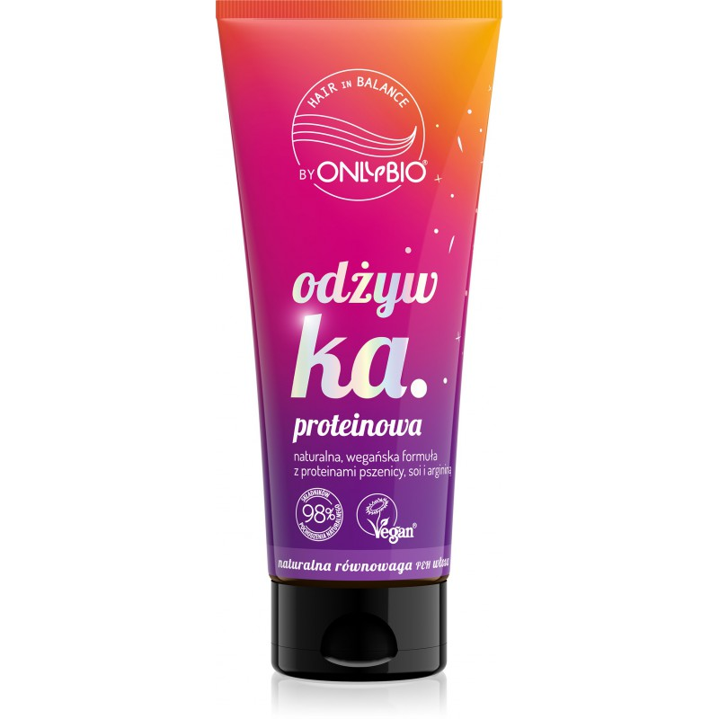
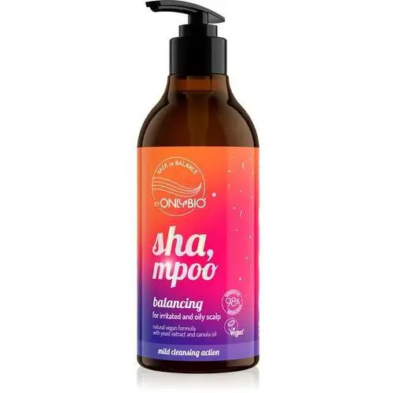
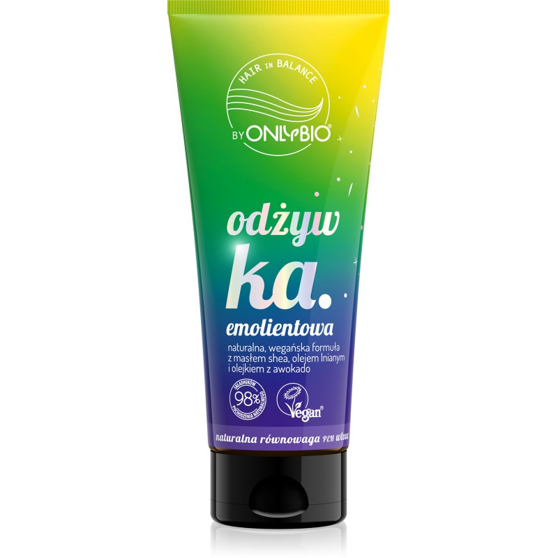

Metoda mycia głowy OMO:
Polecajki do metody OMO z firmy Onlybio:

🍀Krok 1. O jak odżywianie🍀
Delikatnie zwilż włosy i skórę głowy. Następnie nałóż pierwszą odżywkę na długość włosów, mniej więcej do poziomu linii uszu. Zanim sięgniesz po szampon odczekaj dłuższą chwilę, a najlepiej kilka minut. Na tym etapie odżywka ma za zadanie otoczyć końcówki ochronnym filmem, tym samym zapobiegając ich naruszeniu podczas mycia.

🌻Krok 2. M jak mycie🌻
Jak myć włosy w metodzie OMO? Nie spłukując wcześniej nałożonej odżywki nałóż szampon na skórę głowy i wykonaj jej delikatny masaż. Ważne, aby nie pocierać przy tym samych kosmyków, a skupić się na oczyszczaniu skalpu. Pozwól, aby pasma delikatnie umyła woda z szamponem, spływająca podczas spłukiwania – bez potrzeby szkodliwego ich pocierania. Na tym etapie spłynie także odżywka nałożona w pierwszym kroku.
Jeśli szampon słabo się pieni, spróbuj mycia metodą kubeczkową: odpowiednią ilość kosmetyku najpierw zmieszaj z niewielką ilością wody w pojemniczku i dopiero wtedy nałóż bezpośrednio na skórę głowy.

🍀Krok 3. O jak odżywianie🍀
Po spłukaniu szamponu i pierwszej odżywki nałóż drugą odżywkę. Odczekaj, co najmniej 2 minuty, i spłucz letnią wodą. Zadaniem drugiej odżywki jest zamknięcie rytuału mycia OMO. Jest to niezbędny etap, dzięki któremu możemy liczyć na efekt gładkich, zregenerowanych i lśniących włosów.